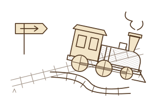
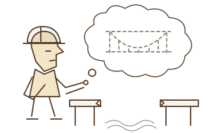
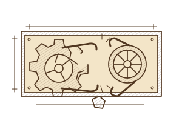
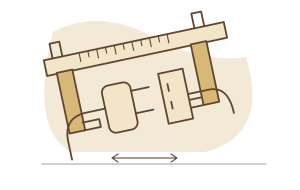

Going off-plan
BOS checks proposed changes against what you agreed.
For AI-assisted app development
BOS helps your coding AI remember what you agreed, flag risky changes, and show what it checked. Use it with Base44, Codex, or Claude Code.
Think of BOS as your project’s notebook and checklist, working alongside your coding AI.

BOS checks proposed changes against what you agreed.
Keep the project’s decisions handy when you start a new chat.

Ask BOS for evidence of what was actually checked.

Keep existing workflows in view when your app changes.
Give your AI the project rules and decisions it should follow when you start a new chat.
Ask for a plan and check what could affect your data, permissions, or existing workflows.
Ask for evidence of what changed and what still needs your review.
BOS works as one helper: Local BOS keeps this app’s plan and decisions in its folder on your computer, while Cloud BOS provides online guidance and checks through your My BOS account. In Claude Code or Codex, just type “Ask BOS to…” or “Use BOS to…”; BOS explains any connection or approval needed.
Choose a card for a practical example and the result to expect.
BOS compares proposed changes with your app’s purpose, requirements and previous decisions. It can flag changes to rules or data that you did not ask for.
For example: You ask for a simpler booking screen. The AI also proposes changing cancellation rules. BOS can flag that extra change before you proceed.
You receive: The mismatch, why it matters and a suggested next step.
BOS uses saved project records to help your coding AI pick up the work. It checks what those records actually say instead of relying on the previous conversation.
For example: Come back next week and see why a particular save method was chosen, what passed testing and what still needs doing.
You receive: A clear starting point, relevant decisions and the next unfinished task.
BOS helps identify problems while you build and explains why they matter. A warning may suggest checking a result, investigating a conflict or pausing a risky change.
For example: The AI says saving is fixed, but nobody has checked whether the information survives reopening the app. BOS keeps that missing check visible.
You receive: A clear warning, what prompted it and a suggested next step.
BOS helps turn a reported problem into a focused repair and test plan. Your coding tool runs the checks it supports; BOS helps keep the results and remaining gaps clear.
For example: After repairing saving, test reopening the app, invalid entries and a related screen to check that the change did not break something else.
You receive: What changed, what passed, what failed and what still needs checking in the running app.

Check Platform FitFind features that may need a different approach on your chosen platform before spending time building them.See an exampleBOS helps identify platform limits and the device tests needed to confirm support. It can suggest a different design or a fallback when the original approach is unsuitable.
For example: Before building phone notifications, check whether they can work when the screen is locked—and test that behaviour on an actual phone.
You receive: The relevant limitation, what needs testing and a practical next step.
A reviewer checks whether a lesson is suitable to share without private project material. Another app receives it only when relevant and must still test its own result.
For example: A retry caused duplicate actions in another app. A reviewed lesson can help you check whether your app has the same risk.
You receive: A relevant lesson, when it applies and the checks needed before relying on it.
A person supervises the review and decides what happens next. The aim is to surface concerns that one perspective might miss.
For example: review a complex change from security, usability and testing perspectives before building it.
You receive: additional perspectives, concerns and suggested checks.
Examples show intended use. Available help depends on your coding tool, account access and installed components. Your AI should explain what it can run and what still needs checking.
Create your account in My BOS. This is your BOS sign-in.
Choose Codex or Claude Code in My BOS and follow its computer setup guide. Using Base44? Continue in your browser.
Open your app’s project in your coding tool and follow the guide to connect it. BOS shows the checks and your next step.
In your app’s Claude Code or Codex chat, type Ask BOS what it can do for a short introduction, or copy a prompt below.